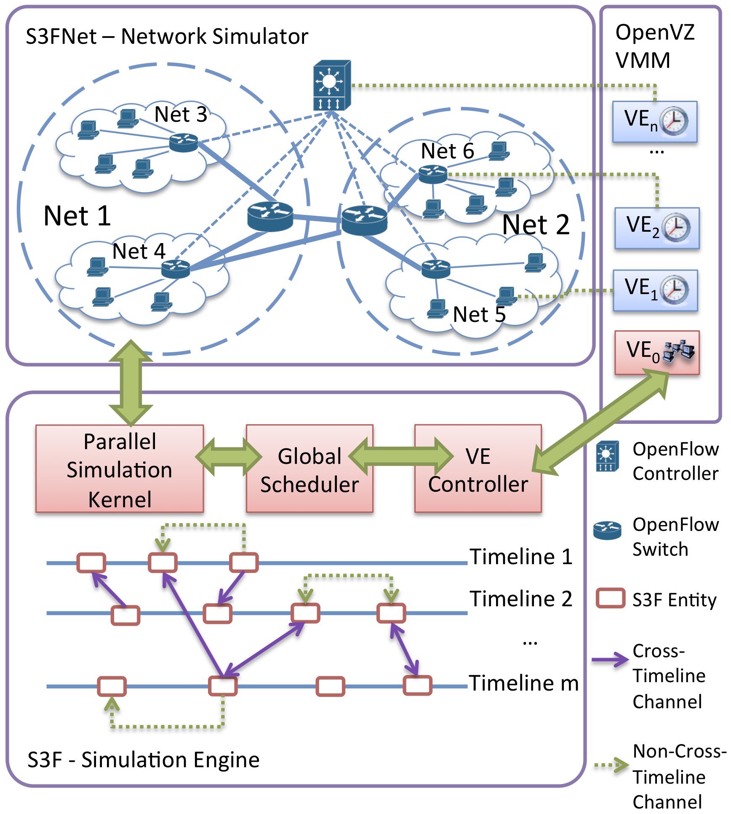

Existing network architectures fall short when handling networking trends, e.g., mobility, server virtualization, and cloud computing, as well as market requirements with rapid changes. Software-defined networking (SDN) is designed to transform network architectures by decoupling the control plane from the data plane. Intelligence is shifted to the logically centralized controller with direct programmability, and the underlying infrastructures are abstracted from applications. Our ongoing research on SDN mainly focuses on two areas.
First, it is critical to ensure that network policy (e.g., security/performance) remains consistent during state transitions. However, even networks with centralized control like SDN are incapable of controlling the exact timing of network events, ultimately leading to inconsistency between policy and actual desired network behavior. We investigate a generic framework which supports customizable consistency policies under temporal uncertainty about the network state. For any given consistency policy, our framework synthesizes a correct update plan while heuristically minimizing transition delay.
Second, the wide adoption of SDN in network industries has motivated us to develop large-scale testbeds for evaluation of systems that incorporate SDN with desired performance fidelity.
